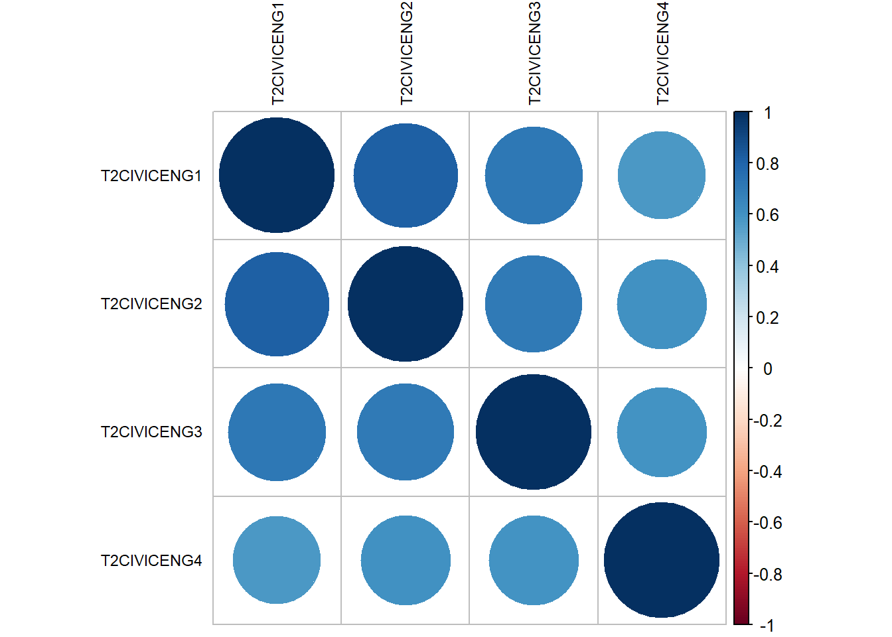

Data
Lauren
2026-09-11
1 Data and methods
1.1 Data
To answer the research questions, this paper utilises data from the Michigan Residential Community Survey (Rambaran 2025). This survey is administered under students from the University of Michigan, who live in learning communities. In total eleven learning communities participated in this study, ten of which took the survey in two different waves. For this paper, the data from both waves of one of the learning communities is used. The survey for Wave 1 was administered in october and november, the second Wave was administered in march and april. This learning community consisted of 121 first year students. For both waves, the response rate was more than 90%. In this chapter, the measurements for the most important variables will be discussed.
1.1.2 Civic attitudes
To measure civic attitudes, a validated scale of four items was used (Doolittle and Faul 2013). This scale measures whether students (1) feel responsible for their community, (2) believe that they should make a difference in their community, (3) are committed to their community and (4) know how to give back to their community (Rambaran 2025). Before constructing the scale, factor analyses were carried out for both Wave 1 and Wave 2, as shown below.
IC_df <- as.data.frame(T1civeng[[1]])
psych::KMO(IC_df) ## Kaiser-Meyer-Olkin factor adequacy
## Call: psych::KMO(r = IC_df)
## Overall MSA = 0.77
## MSA for each item =
## T1CIVICENG1 T1CIVICENG2 T1CIVICENG3 T1CIVICENG4
## 0.83 0.72 0.73 0.85corrplot:: corrplot(cor(IC_df, use="complete.obs"), tl.col='black', tl.cex=.75) 
Factors_w1 <- psych:: fa(IC_df, nfactors = 4, rotate = "none", fm = "minres")
Factors_w1## Factor Analysis using method = minres
## Call: psych::fa(r = IC_df, nfactors = 4, rotate = "none", fm = "minres")
## Standardized loadings (pattern matrix) based upon correlation matrix
## MR1 MR2 MR3 MR4 h2 u2 com
## T1CIVICENG1 0.67 -0.23 0.05 0 0.50 0.50 1.2
## T1CIVICENG2 0.87 -0.13 -0.03 0 0.78 0.22 1.0
## T1CIVICENG3 0.86 0.13 -0.04 0 0.76 0.24 1.0
## T1CIVICENG4 0.58 0.26 0.05 0 0.41 0.59 1.4
##
## MR1 MR2 MR3 MR4
## SS loadings 2.30 0.15 0.01 0.00
## Proportion Var 0.57 0.04 0.00 0.00
## Cumulative Var 0.57 0.61 0.61 0.61
## Proportion Explained 0.93 0.06 0.00 0.00
## Cumulative Proportion 0.93 1.00 1.00 1.00
##
## Mean item complexity = 1.2
## Test of the hypothesis that 4 factors are sufficient.
##
## df null model = 6 with the objective function = 1.65 with Chi Square = 193.93
## df of the model are -4 and the objective function was 0
##
## The root mean square of the residuals (RMSR) is 0
## The df corrected root mean square of the residuals is NA
##
## The harmonic n.obs is 108 with the empirical chi square 0 with prob < NA
## The total n.obs was 121 with Likelihood Chi Square = 0 with prob < NA
##
## Tucker Lewis Index of factoring reliability = 1.033
## Fit based upon off diagonal values = 1
## Measures of factor score adequacy
## MR1 MR2 MR3 MR4
## Correlation of (regression) scores with factors 0.94 0.51 0.13 0
## Multiple R square of scores with factors 0.89 0.26 0.02 0
## Minimum correlation of possible factor scores 0.78 -0.47 -0.97 -1IC_df2 <- as.data.frame(T2civeng[[1]])
psych::KMO(IC_df2) ## Kaiser-Meyer-Olkin factor adequacy
## Call: psych::KMO(r = IC_df2)
## Overall MSA = 0.81
## MSA for each item =
## T2CIVICENG1 T2CIVICENG2 T2CIVICENG3 T2CIVICENG4
## 0.77 0.77 0.86 0.90corrplot:: corrplot(cor(IC_df2, use="complete.obs"), tl.col='black', tl.cex=.75)
Factors_w2 <- psych:: fa(IC_df2, nfactors = 4, rotate = "none", fm = "minres")
Factors_w2## Factor Analysis using method = minres
## Call: psych::fa(r = IC_df2, nfactors = 4, rotate = "none", fm = "minres")
## Standardized loadings (pattern matrix) based upon correlation matrix
## MR1 MR2 MR3 MR4 h2 u2 com
## T2CIVICENG1 0.90 -0.19 -0.06 0 0.84 0.16 1.1
## T2CIVICENG2 0.90 -0.12 0.11 0 0.83 0.17 1.1
## T2CIVICENG3 0.82 0.13 -0.11 0 0.71 0.29 1.1
## T2CIVICENG4 0.70 0.24 0.07 0 0.55 0.45 1.3
##
## MR1 MR2 MR3 MR4
## SS loadings 2.77 0.13 0.03 0.00
## Proportion Var 0.69 0.03 0.01 0.00
## Cumulative Var 0.69 0.72 0.73 0.73
## Proportion Explained 0.94 0.04 0.01 0.00
## Cumulative Proportion 0.94 0.99 1.00 1.00
##
## Mean item complexity = 1.1
## Test of the hypothesis that 4 factors are sufficient.
##
## df null model = 6 with the objective function = 2.48 with Chi Square = 292.76
## df of the model are -4 and the objective function was 0
##
## The root mean square of the residuals (RMSR) is 0
## The df corrected root mean square of the residuals is NA
##
## The harmonic n.obs is 105 with the empirical chi square 0 with prob < NA
## The total n.obs was 121 with Likelihood Chi Square = 0 with prob < NA
##
## Tucker Lewis Index of factoring reliability = 1.021
## Fit based upon off diagonal values = 1
## Measures of factor score adequacy
## MR1 MR2 MR3 MR4
## Correlation of (regression) scores with factors 0.96 0.56 0.37 0
## Multiple R square of scores with factors 0.93 0.31 0.13 0
## Minimum correlation of possible factor scores 0.85 -0.38 -0.73 -1The KMO scores were .77 and .81 for Wave 1 and Wave 2 respectively. This means that the data is suitable for conducting a factor analysis. Secondly, all correlations were positive, and seemed visually strongly present, thus a factor analysis was conducted. As expected, the four items loaded on one factor together, with all factor loadings being larger than XXX. Based on this, the scales for civic attitudes were created by taking a students’ average score on the four items, if they answered three or more of the items. If students answered fewer than three items, they were coded as missing (XXX%).
reliability <- psych::alpha(IC_df[, c("T1CIVICENG1","T1CIVICENG2","T1CIVICENG3","T1CIVICENG4")])
reliability##
## Reliability analysis
## Call: psych::alpha(x = IC_df[, c("T1CIVICENG1", "T1CIVICENG2", "T1CIVICENG3",
## "T1CIVICENG4")])
##
## raw_alpha std.alpha G6(smc) average_r S/N ase mean sd median_r
## 0.81 0.82 0.8 0.54 4.7 0.029 5 0.94 0.54
##
## 95% confidence boundaries
## lower alpha upper
## Feldt 0.75 0.81 0.86
## Duhachek 0.75 0.81 0.87
##
## Reliability if an item is dropped:
## raw_alpha std.alpha G6(smc) average_r S/N alpha se var.r med.r
## T1CIVICENG1 0.79 0.81 0.76 0.58 4.2 0.034 0.0192 0.53
## T1CIVICENG2 0.72 0.73 0.66 0.47 2.7 0.045 0.0144 0.53
## T1CIVICENG3 0.71 0.73 0.67 0.47 2.7 0.047 0.0194 0.47
## T1CIVICENG4 0.83 0.84 0.79 0.63 5.2 0.027 0.0094 0.61
##
## Item statistics
## n raw.r std.r r.cor r.drop mean sd
## T1CIVICENG1 109 0.77 0.77 0.65 0.57 4.8 1.23
## T1CIVICENG2 108 0.85 0.87 0.84 0.75 5.5 0.99
## T1CIVICENG3 108 0.86 0.87 0.84 0.74 5.2 1.10
## T1CIVICENG4 108 0.75 0.72 0.57 0.51 4.6 1.35
##
## Non missing response frequency for each item
## 1 2 3 4 5 6 7 miss
## T1CIVICENG1 0.02 0.02 0.07 0.29 0.31 0.21 0.07 0.10
## T1CIVICENG2 0.00 0.00 0.02 0.17 0.30 0.38 0.14 0.11
## T1CIVICENG3 0.00 0.00 0.05 0.26 0.32 0.23 0.14 0.11
## T1CIVICENG4 0.00 0.07 0.11 0.28 0.27 0.18 0.09 0.11reliability$alpha.drop ## raw_alpha std.alpha G6(smc) average_r S/N alpha se
## T1CIVICENG1 0.7898278 0.8069117 0.7600961 0.5821131 4.178977 0.03376777
## T1CIVICENG2 0.7184678 0.7282161 0.6620457 0.4717746 2.679393 0.04510940
## T1CIVICENG3 0.7085011 0.7291575 0.6677994 0.4729614 2.692182 0.04688714
## T1CIVICENG4 0.8294051 0.8379094 0.7883594 0.6327755 5.169390 0.02734554
## var.r med.r
## T1CIVICENG1 0.019243874 0.5341844
## T1CIVICENG2 0.014446190 0.5341844
## T1CIVICENG3 0.019424805 0.4737106
## T1CIVICENG4 0.009399533 0.6119581reliability2 <- psych::alpha(IC_df2[, c("T2CIVICENG1","T2CIVICENG2","T2CIVICENG3","T2CIVICENG4")])
reliability2##
## Reliability analysis
## Call: psych::alpha(x = IC_df2[, c("T2CIVICENG1", "T2CIVICENG2", "T2CIVICENG3",
## "T2CIVICENG4")])
##
## raw_alpha std.alpha G6(smc) average_r S/N ase mean sd median_r
## 0.88 0.89 0.87 0.67 8.1 0.017 5.1 0.99 0.66
##
## 95% confidence boundaries
## lower alpha upper
## Feldt 0.85 0.88 0.92
## Duhachek 0.85 0.88 0.92
##
## Reliability if an item is dropped:
## raw_alpha std.alpha G6(smc) average_r S/N alpha se var.r med.r
## T2CIVICENG1 0.83 0.84 0.78 0.64 5.3 0.026 0.0037 0.60
## T2CIVICENG2 0.83 0.84 0.78 0.63 5.1 0.027 0.0058 0.60
## T2CIVICENG3 0.85 0.86 0.82 0.67 6.0 0.025 0.0176 0.60
## T2CIVICENG4 0.90 0.90 0.86 0.75 8.9 0.016 0.0037 0.72
##
## Item statistics
## n raw.r std.r r.cor r.drop mean sd
## T2CIVICENG1 105 0.90 0.90 0.87 0.80 4.9 1.2
## T2CIVICENG2 105 0.89 0.90 0.88 0.82 5.4 1.0
## T2CIVICENG3 105 0.87 0.87 0.81 0.76 5.2 1.1
## T2CIVICENG4 105 0.81 0.80 0.68 0.65 4.8 1.3
##
## Non missing response frequency for each item
## 1 2 3 4 5 6 7 miss
## T2CIVICENG1 0.01 0.03 0.08 0.24 0.31 0.26 0.08 0.13
## T2CIVICENG2 0.00 0.00 0.04 0.15 0.32 0.36 0.12 0.13
## T2CIVICENG3 0.00 0.01 0.02 0.30 0.26 0.32 0.10 0.13
## T2CIVICENG4 0.01 0.02 0.13 0.21 0.29 0.28 0.07 0.13reliability2$alpha.drop ## raw_alpha std.alpha G6(smc) average_r S/N alpha se
## T2CIVICENG1 0.8327506 0.8404272 0.7834358 0.6370996 5.266730 0.02635169
## T2CIVICENG2 0.8322631 0.8370127 0.7819057 0.6312434 5.135448 0.02660464
## T2CIVICENG3 0.8476004 0.8566874 0.8227534 0.6658407 5.977754 0.02465003
## T2CIVICENG4 0.8957759 0.8989641 0.8619178 0.7478456 8.897474 0.01604395
## var.r med.r
## T2CIVICENG1 0.003694115 0.6040620
## T2CIVICENG2 0.005832812 0.5999946
## T2CIVICENG3 0.017571187 0.6040620
## T2CIVICENG4 0.003722723 0.7182852Based on this construction of the variable, a trustworthy scale was constructed, with a Cronbach’s Alpha of .810 and .885 for Wave 1 and Wave 2 respectively. Dropping one of the items would not have led to a significant increase in the Cronbach’s Alpha score, and thus it was decided to keep all four items, to have as much theoretical breadth while keeping a trustworthy score. A frequency table for this variable is shown in Table 1 below.
IC_df$missings <- rowSums(is.na(IC_df))
IC_df$ce_t1 <- ifelse(IC_df$missings <= 1, rowMeans(IC_df[,1:4]), NA)
IC_df2$missings <- rowSums(is.na(IC_df2))
IC_df2$ce_t2 <- ifelse(IC_df2$missings <= 1, rowMeans(IC_df2[,1:4]), NA)Table 1. Descriptive statistics for civic attitudes
pander:: pander(table(IC_df$ce_t1))| 3 | 3.25 | 3.5 | 3.75 | 4 | 4.25 | 4.5 | 4.75 | 5 | 5.25 | 5.5 | 5.75 | 6 |
|---|---|---|---|---|---|---|---|---|---|---|---|---|
| 1 | 1 | 6 | 2 | 7 | 10 | 15 | 13 | 7 | 13 | 5 | 8 | 6 |
| 6.25 | 6.5 | 6.75 | 7 |
|---|---|---|---|
| 4 | 2 | 2 | 6 |
pander:: pander(table(IC_df2$ce_t2))| 2.25 | 3 | 3.25 | 3.5 | 3.75 | 4 | 4.25 | 4.5 | 4.75 | 5 | 5.25 | 5.5 | 5.75 |
|---|---|---|---|---|---|---|---|---|---|---|---|---|
| 1 | 1 | 1 | 3 | 4 | 11 | 8 | 8 | 7 | 11 | 10 | 9 | 3 |
| 6 | 6.25 | 6.5 | 7 |
|---|---|---|---|
| 17 | 2 | 2 | 7 |
1.1.3 Gender
This paper will use gender as a covariate, as clustering in civic attitudes may actually be explained by clustering due to gender. Students were asked what their gender was, where they chose from a pre-set list of gender-identities, and with the opportunity to describe their identity themselves, if none of to options fit their identity (Rambaran 2025). The descriptive statistics for gender are shown in Table 2 below.
gender1 <- gender[[1]][,1]
gender2 <- gender[[1]][,2]
gender <- coalesce(gender1, gender2)
gender <- factor(as.numeric(gender),
levels = c('1',
'2'),
labels = c(
'Cis-woman',
'Cis-man'))Table 2. Descriptive statistics for gender
pander:: pander(table(gender))| Cis-woman | Cis-man |
|---|---|
| 42 | 79 |
1.2 Methodology
This paper aims to answer both a descriptive and an explanatory question, necessitating the use of different methods. For answering the question of whether there is segregation with regards to civic attitudes in the Michigan Learning Community, Moran’s I was used. This is a measure that quantifies the degree of segregation in a network (Tolsma and Hofstra 2022), making it suited for answering the question on segregation. A variety of other descriptive statistics will also be reported on, to get a comprehensive view of the data.
To answer whether there are selection and influence effects with regards to civic attitudes, RSiena was used (Ripley et al. 2026). RSiena models social networks in a stochastic actor-oriented model, where the actors take sequential and probabilistic mini-steps. In this way, RSiena models how networks change based on user-chosen network statistics. This paper will describe the process of building up to a complete model in RSiena, starting with a null-model, where no additional network statistics are included. The specific steps taken towards a final model will be described in the ‘results’ section.
1.1.1 Social network
Students were asked which other students within the learning community they hang around with and talk to the most (Rambaran 2025). Students could nominate up to ten other students. As everyone in the learning community was asked to fill out the survey, and the response rate was relatively high, a socionet was created. This means that (almost) everyone in the sample was questioned, creating a full overview of all the nodes and ties within this specific network. Students who did not fill out the survey did not consent to having their data used in that particular wave, and thus were set to 0, thereby not receiving any incoming or outgoing ties. In Wave 1 9.09% of the students did not fill out the question on who they hang out with, in Wave 2 this was 7.44%.